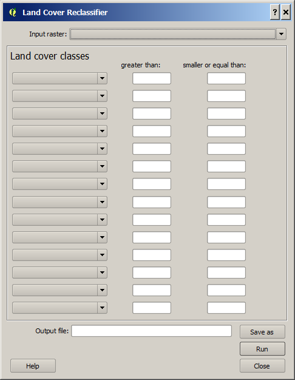

The Land
Cover Reclassifier is a simple plugin that can be used to create a UMEP land
cover raster grid. The land cover fractions included in UMEP are:
-
Paved (1)
-
Buildings
(2)
-
Evergreen
trees (3)
-
Deciduous
trees (4)
-
Grass (5)
-
Bare soil
(6)
-
Water (7)
It is not
necessary to use this plugin to reclassify into a UMEP land cover dataset. This
reclassification can also be done in other reclassification tools such a
r.reclass in GRASS etc., just as long as the seven different land cover types is
populated with the correct values (in parentheses above).
The Land
Cover Reclassifier is located at UMEP ->
Pre-Processor -> Urban Land Cover -> Land Cover Reclassifier.
When you
run plugin, you will see the dialog shown below. It consists of three sections.
The top section let you select raster land cover dataset that you want to
reclassify into the UMEP land cover classes. The next section let you choose
interval values to be classified into a certain UMEP land cover class. Not all
lines and boxes need to be filled in, but in case many different intervals are
to be classified as the same land cover class, many lines has been added. The
last section lets you to specify the output file (.tiff) etc.

Any valid
raster dataset (float or integer) loaded into QGIS will appear in this dropdown
list. Choose the one that includes your land cover information.
Here you
fill the interval values that you want to reclassify into a certain cover class.
All values not included will appear as 0 in the output land cover raster. This
should be avoided.
The
location and filename (geoTIFF) will be specified here.
This
starts the reclassification.
This
button closes the plugin.